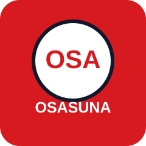
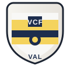
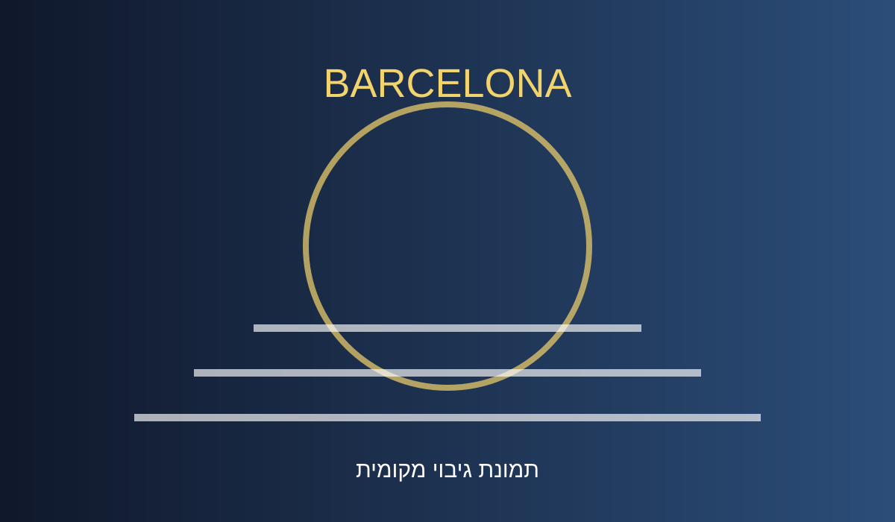
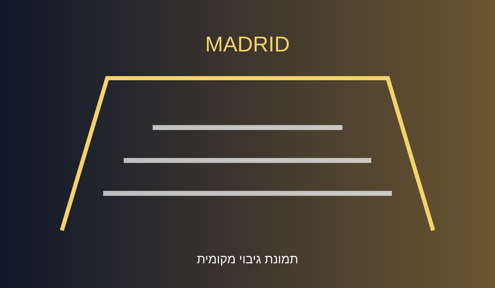
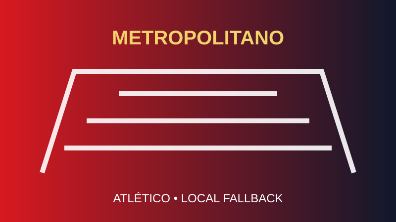

08.12.202621:00
 ברצלונה
ברצלונהברצלונהמשחק פתיחת המסלול
מדריך מרוכז למסע במדריד ובברצלונה — משחקים גדולים, אצטדיונים, מסעדות כשרות, בתי כנסת וחב״ד.
משחקים, אצטדיונים, לוגואים רשמיים של הקבוצות, אוכל כשר, בתי חב״ד ורעיונות למסלול.
השעות כפופות לאישור רשמי
ברצלונה ריאל מדריד
ריאל מדריד
אוסאסונה
ולנסיהרק ברצלונה, ריאל ואתלטיקו

Avinguda Aristides Maillol, Barcelona

Avenida de Concha Espina, Madrid

Avenida de Luis Aragonés, Madrid
התמקמות, טיול רגלי, אוכל כשר ומשחק ברצלונה מול מנצ׳סטר סיטי.
ריאל מדריד מול אוסאסונה, ברנבאו, תפילות, אוכל כשר ואתלטיקו מול ולנסיה.
שמרו את המדריך וצרו קשר לקבלת פרטים.